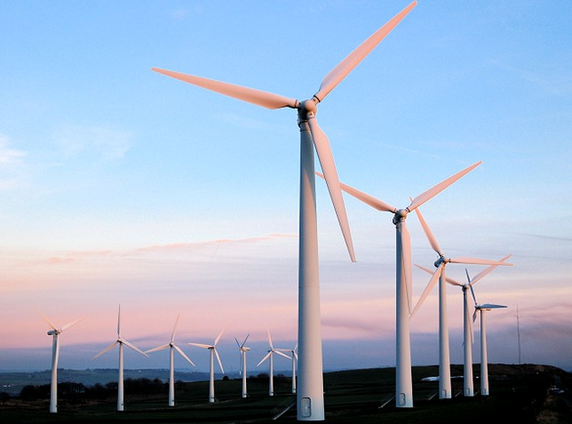

Novas Tecnologias
Descubra como a tecnologia pode mudar o mundo
COMECE JÀ!O que é ODS?
Os Objetivos de Desenvolvimento Sustentável (ODS) são uma agenda mundial adotada durante a Cúpula das Nações Unidas sobre o Desenvolvimento Sustentável em setembro de 2015 composta por 17 objetivos e 169 metas a serem atingidos até 2030. São uma chamada universal para acabar com a pobreza, proteger o planeta e garantir que todas as pessoas desfrutem de paz e prosperidade.
Os 17 objetivos baseiam-se nos sucessos dos Objetivos de Desenvolvimento do Milênio e incluem novas áreas como mudanças climáticas, desigualdade econômica, inovação, consumo sustentável, paz e justiça, entre outras prioridades. São interconectados, ou seja, a chave para o sucesso de um objetivo envolve abordar questões associadas a outros.
Os ODS trabalham com o espírito de parceria e pragmatismo para fazer hoje as escolhas corretas para melhorar a vida, de forma sustentável, das gerações futuras. Eles fornecem diretrizes e metas claras para que todos os países as adotem de acordo com suas próprias prioridades e com os desafios ambientais mundiais.
Qual o objetivo do ODS 9?
A ODS 9-Indústria, Inovação e Infraestrutura-busca construir infraestruturas resilientes, promover a industrialização inclusiva e sustentável e fomentar a inovação
O investimento em infraestrutura e inovação são impulsionadores cruciais do crescimento econômico e do desenvolvimento. Com mais da metade da população mundial vivendo em cidades, o transporte e as energias renováveis estão se tornando cada vez mais importantes, bem como as novas indústrias e tecnologias de informação e comunicação.
O progresso tecnológico também é fundamental para encontrar soluções duradouras para os desafios econômicos e ambientais, como o fornecimento de novos empregos e a promoção da eficiência da energia. Promover as indústrias sustentáveis e investir na pesquisa científica e na inovação são formas importantes de facilitar o desenvolvimento sustentável.
Mais de 4 bilhões de pessoas ainda não têm acesso à internet e 90% pertencem aos países em desenvolvimento. A ponte sobre esta divisão digital é crucial para assegurar a igualdade de acesso à informação e ao conhecimento, bem como promover a inovação e o empreendedorismo.
OBJETIVOS
1-Desenvolver infraestrutura de qualidade, confiável, sustentável e resiliente, incluindo infraestrutura regional e transfronteiriça, para apoiar o desenvolvimento econômico e o bem-estar humano, com foco no acesso equitativo e a preços acessíveis para todos
2-Promover a industrialização inclusiva e sustentável e, até 2030, aumentar significativamente a participação da indústria no setor de emprego e no PIB, de acordo com as circunstâncias nacionais, e dobrar sua participação nos países menos desenvolvidos
3-Aumentar o acesso das pequenas indústrias e outras empresas, particularmente em países em desenvolvimento, aos serviços financeiros, incluindo crédito acessível e sua integração em cadeias de valor e mercados
4-Até 2030, modernizar a infraestrutura e reabilitar as indústrias para torná-las sustentáveis, com eficiência aumentada no uso de recursos e maior adoção de tecnologias e processos industriais limpos e ambientalmente corretos; com todos os países atuando de acordo com suas respectivas capacidades
5-Fortalecer a pesquisa científica, melhorar as capacidades tecnológicas de setores industriais em todos os países, particularmente os países em desenvolvimento, inclusive, até 2030, incentivando a inovação e aumentando substancialmente o número de trabalhadores de pesquisa e desenvolvimento por milhão de pessoas e os gastos público e privado em pesquisa e desenvolvimento
6-Facilitar o desenvolvimento de infraestrutura sustentável e resiliente em países em desenvolvimento, por meio de maior apoio financeiro, tecnológico e técnico aos países africanos, aos países menos desenvolvidos, aos países em desenvolvimento sem litoral e aos pequenos Estados insulares em desenvolvimento
7-Apoiar o desenvolvimento tecnológico, a pesquisa e a inovação nacionais nos países em desenvolvimento, inclusive garantindo um ambiente político propício para, entre outras coisas, a diversificação industrial e a agregação de valor às commodities
8-Aumentar significativamente o acesso às tecnologias de informação e comunicação e se empenhar para oferecer acesso universal e a preços acessíveis à internet nos países menos desenvolvidos, até 2020
Tecnologias Sustentáveis
Tecnologia sustentável é a agregação e aplicação de todas as Ciências, visando prioritariamente à continuidade da existência de todo ser vivente na Terra. Tem como desafio redirecionar as concepções atualmente existentes em novas formas de pensar e agir, com responsabilidade ao meio em que vivemos e as consequências das ações tomadas e não tomadas no seu devido tempo, adaptando as tecnologias existentes e as futuras para que sempre possa de alguma forma co-existir o crescimento populacional e o nosso ecossistema. a tecnologia sustentável é uma das varias formas de utilizar tecnologias sem poluir o meio ambiente.
Energia Solar

Energia Eólica
Sobre Mim
Olá, me chamo Ryan Melo, tenho 16 anos, moro em Florianóplis-Sc e tenho o sonho de me tornar um programador
Desde pequeno eu possuo um fascínio pela tecnologia, eu nasci na era do avanço tecnológico, logo era de se esperar toda a minha paixão por tecnologias.
O futuro depende da tecnlogia, nós estamos vivendo apenas o começo, é magnífico imaginar como as coisas irão evolir daqui para a frente
E eu quero ser uma das pessoas que irá melhorar a sociedade com a tecnologia.